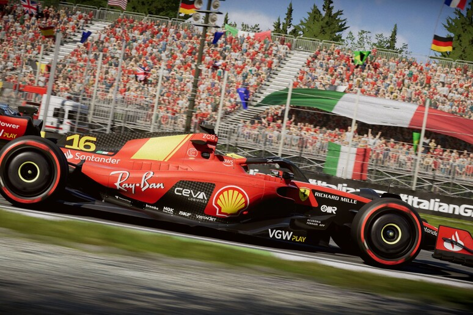
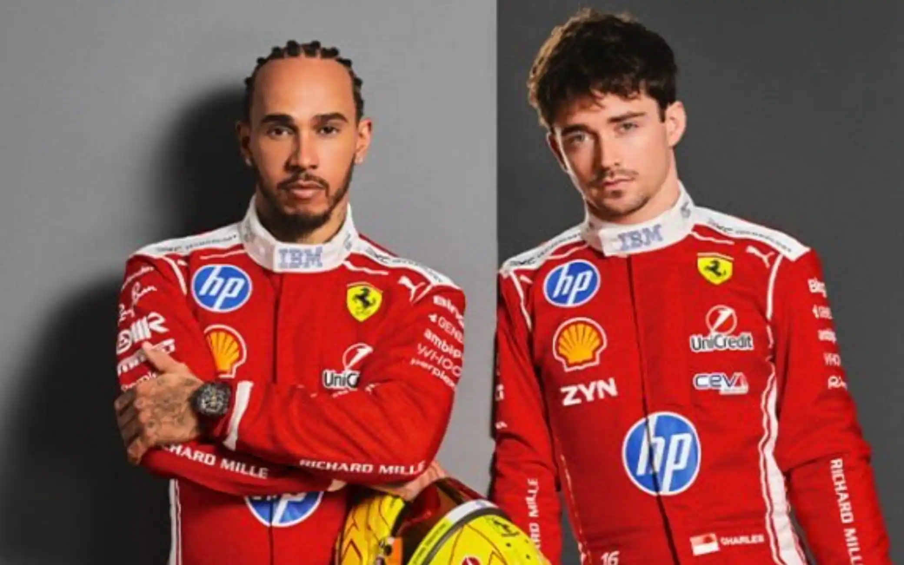

Tifo Napoli da quando sono piccolo e, dal 2022, realizzo video reaction alle partite insieme a mio padre. Mi diverto molto a farle e sono stato fortunato: in quattro anni di video ho visto vincere due scudetti (stagione 2022/2023 e stagione 2024/2025). Possiamo quindi dire che l'apertura del mio canale abbia portato bene al Napoli, dato che non vinceva da trentatré anni prima che iniziassi. Spero di vederne molti altri e di continuare con quello che è ormai il mio marchio di fabbrica: le reaction.

Oltre al calcio, in questi anni mi sono appassionato moltissimo alla Formula 1: ovviamente tifo Ferrari e il mio pilota preferito è Lewis Hamilton, a pari merito con Leclerc...